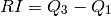
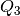
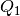
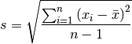

Estructuras de Control¶
En esta sección vamos a describir las estructuras de control más importantes en Python:
El condicional (if)¶
Es quizá la estructura de control más utilizada. A continuación presentamos un sencillo ejemplo para observar como es su sintaxis en Python:
def mayor_o_menor(x, y):
if x < y:
print x, "es menor que", y
elif x > y:
print x, "es mayor que", y
else:
print x, "y", y, "son iguales"
Al aplicar esta función a distintos números obtenemos:
In [31]: mayor_o_menor(2, 5)
2 es menor que 5
In [32]: mayor_o_menor(100, 10)
100 es mayor que 10
In [33]: mayor_o_menor(1, 1)
1 y 1 son iguales
Algunos de los operadores con los que se pueden hacer comparaciones al momento de usar en if son:
Operador Resultado == Igualdad != No es igual < Menor que > Mayor que <= Menor o igual >= Mayor o igual not Niega una condición in Se usa para verificar si un elemento está en una lista
A excepción de in y not, todos los demás operadores son similares a los usados en otros lenguajes de programación, por lo que no vamos a mirar ejemplos de ellos. Veamos, por tanto, sólo como funcionan los primeros:
In [34]: 3 in [1, 2, 4]
Out[34]: False
In [35]: 3 in [1, 2, 3]
Out[35]: True
In [36]: not 2 == 5
Out[36]: True
A través de estos ejemplos también podemos notar que los valores de verdad en Python se escriben como True y False para verdadero y falso, respectivamente.
- Ejercicios
Definir una función absoluto(x) que tome un número entero y retorne su valor absoluto, así:
In [37]: absoluto(6) Out[37]: 6 In [38]: absoluto(100.22) Out[38]: 100.22 In [39]: absoluto(-18.7) Out[39]: 18.7
Definir una función es_divisible_entre_siete(x) que imprima si un número es o no es divisible entre 7. La función debe retornar resultados como los siguientes:
In [40]: es_divisible_entre_siete(12) 12 no es divisible entre 7 In [41]: es_divisible_entre_siete(14) 14 es divisible entre 7 In [42]: es_divisible_entre_siete(32) 32 no es divisible entre 7 In [43]: es_divisible_entre_siete(21) 21 es divisible entre 7
Nota
Utilizar el operador módulo (%) para decidir si un número es múltiplo de otro. Este operador retorna el resto de la división entre dos números. Por tanto, si un número divide exactamente a otro, retorna 0, sino retorna cualquier otro número. Veamos algunos ejemplos:
In [44]: 12%4 Out[44]: 0 In [45]: 12%6 Out[45]: 0 In [46]: 12%5 Out[46]: 2 In [47]: 25%5 Out[47]: 0 In [48]: 25%6 Out[48]: 1
Generalizar la función anterior como una nueva función llamada es_divisible_entre_n(x, n) que tome dos números enteros e imprima si el primero es divisible entre el segundo, así: (Tomado de Aprenda a pensar como un programador con Python)
In [49]: es_divisible_entre_n(20, 4) 20 es divisible entre 4 In [50]: es_divisible_entre_n(36, 5) 36 no es divisible entre 5
Definir una función agregar_nuevo(li, x) que reciba una lista y un elemento y retorne una nueva lista en la que esté añadido el elemento, pero sólo si éste no hace parte de la lista original (Tomado de Introducción a Mathematica del Prof. Jurgen Tischer).
Por ejemplo:
In [51]: agregar_nuevo([3,9,6], 11) Out[51]: [3, 9, 6, 11] In [52]: agregar_nuevo([3,9,6], 9) Out[52]: [3, 9, 6]
El ciclo for¶
En Python for se utiliza para moverse o iterar entre un conjunto de valores. Su sintaxis es más sencilla que la usada en C o C++, porque en lugar de utilizar un contador cuyo valor va aumentando o disminuyendo durante el ciclo, se toma una secuencia completa (una lista, una tupla, o una cadena), y se recorren sus elementos en el orden en que aparecen en ella.
Observemos algunos ejemplos:
In [53]: for x in [3, 9, 12, 4]:
....: print x
....:
3
9
12
4
In [54]: prefijos = "JKLMNOPQ"
In [55]: sufijos = "ack"
In [56]: for letra in prefijos:
....: print letra + sufijos
....:
Jack
Kack
Lack
Mack
Nack
Oack
Pack
Qack
In [57]: for i in range(10):
....: print i**2
....:
0
1
4
9
16
25
36
49
64
81
range es un comando que muy a menudo se utiliza junto a los ciclos for, pues sirve para generar una lista con todos los números desde 0 hasta cierto valor, . También puede usarse con dos valores, uno como límite inferior y el otro como límite superior, así:
In [58]: range(10)
Out[58]: [0, 1, 2, 3, 4, 5, 6, 7, 8, 9]
In [59]: range(1, 20)
Out[59]: [1, 2, 3, 4, 5, 6, 7, 8, 9, 10, 11, 12, 13, 14, 15, 16, 17, 18, 19]
In [60]: range(7, 25)
Out[60]: [7, 8, 9, 10, 11, 12, 13, 14, 15, 16, 17, 18, 19, 20, 21, 22, 23, 24]
- Ejercicios:
Construir un ciclo for que imprima todos los números pares de 1 a 100.
Definir una función es_primo que tome un número x y verifique si es divisible entre todos los números menores a x. Si lo es, entonces debe retornar False y si no True. Por ejemplo:
In [61]: es_primo(10) Out[61]: False In [62]: es_primo(17) Out[62]: True In [63]: es_primo(15) Out[63]: False In [64]: es_primo(23) Out[64]: True
Nota
Modificar la función es_divisible_entre_n para que en lugar de imprimir oraciones, retorne True o False.
Optimizar la función anterior, respondiendo a la siguiente pregunta: ¿Es necesario revisar todos los números menores a x para verificar si es divisible entre todos ellos? ¿Hasta qué número es en realidad necesario revisar?
Para ello, definir una nueva función es_primo_veloz y comparar los tiempos de ejecución entre ella y es_primo usando el comando %timeit en la consola, así:
In [65]: %timeit es_primo(600) 100000 loops, best of 3: 18.2 us per loop In [66]: %timeit es_primo_veloz(600) 100000 loops, best of 3: 7.62 us per loop
Definir una función rango_intercuartil que calcule el rango intercuartil de una lista. Recordar que éste se define como:

donde  es la mediana de los datos mayores a la mediana y  es la mediana de los datos menores a la mediana.
Por ejemplo, para la siguiente lista:
li = [48.38, 27.6 , 32.46, 51.94, 47.43, 48.61, 34.38, 48.98,\ 48.86, 41.45, 56.55, 25.46, 27.03, 36.72, 48.03, 36.86,\ 42.58, 44.44, 56.12, 43.86, 44.42, 42.92, 41.43, 22.81,\ 36.55, 50.89, 29.93, 47.61, 63.91, 53.98, 42.64, 27.18,\ 29.93, 31.51]
el rango intercuartil es:
In [67]: rango_intercuartil(li) Out[67]: 16.15
Nota
Utilizar la función mediana definida en uno de los ejercicios de la sección anterior.
Dividir la lista original en dos listas li1 y li2 que contengan los elementos menores y mayores a la mediana, respectivamente, y calcularles a éstas nuevamente la mediana para obtener y .
Para ello, definir li1 = [] y li2 = [] para que empiecen siendo listas vacías y utilizar el método append de cada una para añadirles los elementos correspondientes.
Definir una función medias_moviles que calcule todas las medias móviles de una lista li, dado un periodo t.
¿Qué puede decirse sobre las acciones de Intel en el ejemplo anterior?
Definir una función desv_est que calcule la desviación estándar de una lista, usando la fórmula:

donde
 es el promedio y
es el promedio y  es el número total de
datos.
es el número total de
datos.Por ejemplo, la desviación estándar de la lista del ejemplo anterior es:
In [68]: desv_est(li) Out[68]: 10.193054313544058
El ciclo while¶
Finalmente vamos a mirar la sintaxis del comando while, que si bien no es tan usado como los dos anteriores, es muy útil porque permite recorrer los elementos de una lista, tupla o cadena por medio de su índice. Esto es algo que no puede hacerse con mucha naturalidad con for, que está ideado para recorrer los elementos directamente, sin tener que preocuparse por sus posiciones.
Además, con while no es necesario definir un límite superior para realizar un ciclo, como si hay que hacerlo con for.
Miremos un par de ejemplos:
En este primer ejemplo, imprimimos la lista de todos los elementos de li, pero seleccionándolos de li por medio de su índice.
In [69]: li = [3, 6, 9, 11] In [70]: i = 0 In [71]: while i < 4: ....: print li[i] ....: i += 1 ....: 3 6 9 11
En la última línea pueden verse un ejemplo de asignación abreviada, pues en lugar de escribir i = i+1, escribimos i += 1, lo cual es similar a como se hace en C o C++. Otras abreviaciones que funcionan en Python son: -=, *=, /=, y %=.
Nota
¿Cuál es el efecto de %= en un asignación abreviada?
En este ejemplo vamos a imprimir los 20 primeros números que son divisibles entre 4:
In [72]: i = 0 In [73]: j = 1 In [74]: while i <= 20: ....: if es_divisible_entre_n(j, 4): ....: print j ....: i += 1 ....: j += 1 ....: 4 8 12 16 20 24 28 32 36 40 44 48 52 56 60 64 68 72 76 80 84
En este caso vemos cómo usar dos contadores en el ciclo, uno (i) para poder detenerlo cuando se haya obtenido el veinteavo número divisible entre 4, y otro (j) para movernos entre los números mayores a 1 y revisar cuáles de ellos son divisibles entre 4.
- Ejercicios:
Definir una función cuenta_atras(n) que tome un número entero n e imprima todos los números desde n hasta 1 usando un ciclo while. Además, después de imprimir 1, debe imprimir Este es el fin!.
Dada la siguiente cadena:
s = "jhkdaskduwqludhlasdklashdihlasdhljakhuekysbvjkasdhlasdkhlashkdedlahskdlkbasmndkm"
Imprimir en qué posiciones se encuentra la letra k, usando un ciclo while.
R/:
2, 6, 19, 35, 39, 45, 54, 60, 68, 71, 78
Utilizar la función es_primo_veloz para definir una función lista_de_primos(n) que genere la lista de los n primeros números primos. Para que puedan comparar, a continuación aparece la lista de los 20 primeros:
In [75]: lista_de_primos(20) Out[75]: [2, 3, 5, 7, 11, 13, 17, 19, 23, 29, 31, 37, 41, 43, 47, 53, 59, 61, 67, 71]
Nota
Definir una lista vacía y utilizar su método append para añadirle los números primos que vayamos encontrando.
Usar la función digitos, para encontrar el primer número de 4 cifras que sea divisible entre 8 y cuya primera y última cifras sean iguales.
R/:
2032Nota
Definir dos contadores: uno que empiece en 1000 para ir revisando todos los números de 4 cifras, y otro para detener el ciclo while tan pronto se encuentre el primer número que cumpla la condición deseada.